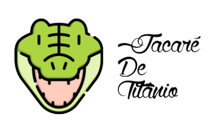

The biggest Metallugircal Org and Metal Band in Brazil!
Welcome to "Jacaré de Titânio".
We from "Jacaré de Titânio", are a metalurgical
brazilian organization focused on alchemy, turning every piece of any metal
in gold.
Besides that, we have a band of professional Metal/Rock
Stars, that are integrated by one of the best names nowadays in the Rock and Roll
world, being it's respectives members and positions:
Besides that, we have a band of professional Metal/Rock
Stars, with it's respectives members and positions:
On the lead vocals: Komodo Dragon;
On the keyboards: Storm Aligator;
On the lead guitar: Speed Crocodile;
On the rythm guitar: Gavial Melódico;
On the bass: Thunder Jacarétinga.
On the drums: Lizard Tornado.

Some of our inspirations!
Inspiration for us!
Vesúvio
Vesúvio is a Heavy Metal Brazilian band formed in 2015 by Arthur Leonardo (Vocals/Guitar),
Matheus Oliveira (Guitar), Eduardo Santana (Bass) and Guilherme Miranda (Drums).
The band presents to the listeners heavy riffs, powerful lyrics and their influences
coming from bands like: Metallica, Alice in Chains and Black Sabbath.
Metallica
Metallica formed in 1981 by drummer Lars Ulrich and guitarist and vocalist James Hetfield
and has become one of the most influential and commercially successful rock bands in history.
Having sold 110 million albums worldwide while playing
to millions of fans on literally all seven continents.
Pearl Jam
Pearl Jam rose above the legions of grungy alt-rockers littering the early '90s to become the most
popular and enduring American rock & roll band of their time.
Unlike many of their Seattle brethren, Pearl Jam, as a collective, were never signed or
affiliated with an indie label -- founding members Stone Gossard and Jeff Ament both were veterans of Green River,
one of the first major bands on Sub Pop.
Alice in Chains
Alice in Chains both epitomized the solemn, heavy Seattle sound of the 1990s and stood apart from the grunge hordes.
What separated Alice in Chains from their alt-rock brethren was how their roots lay in heavy metal, not punk.